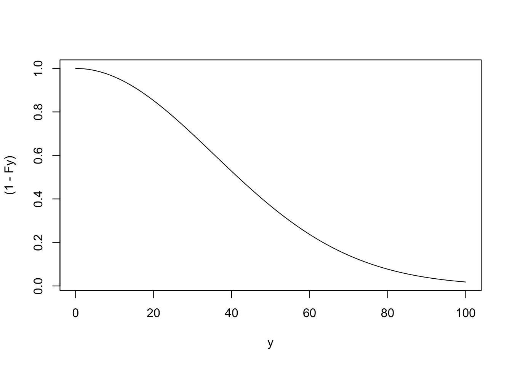
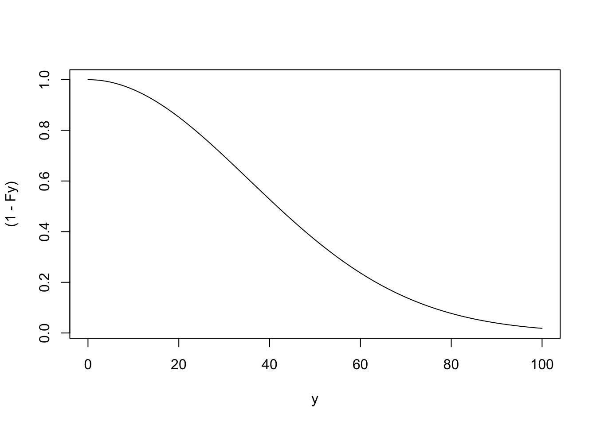
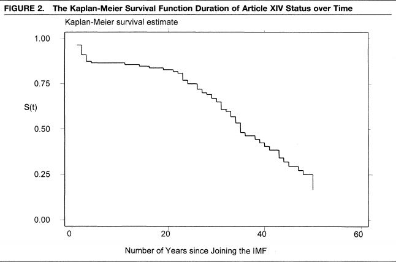
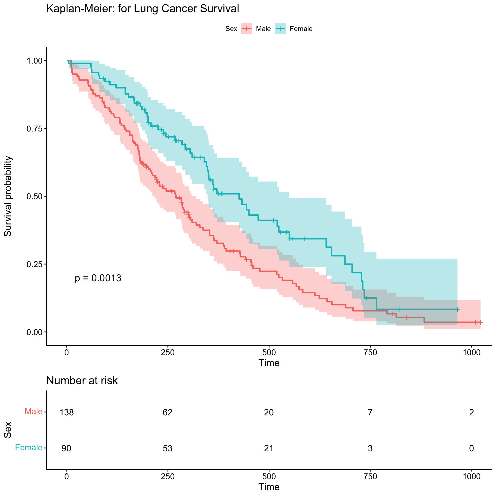
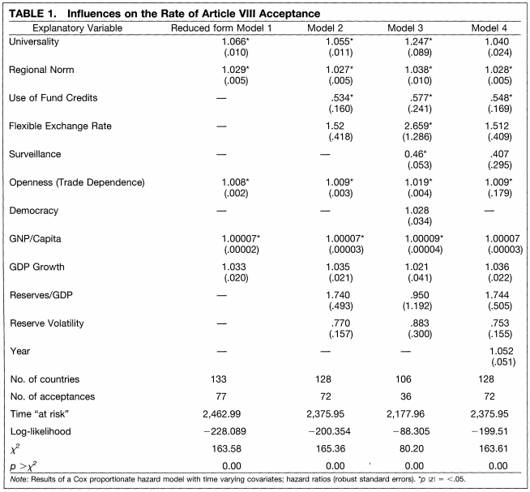
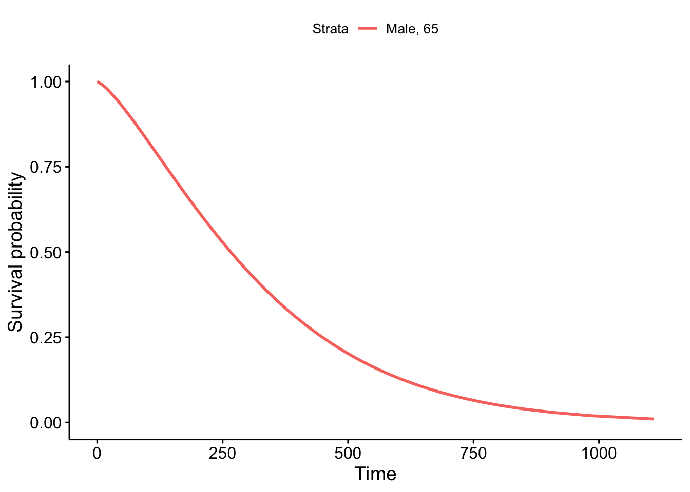
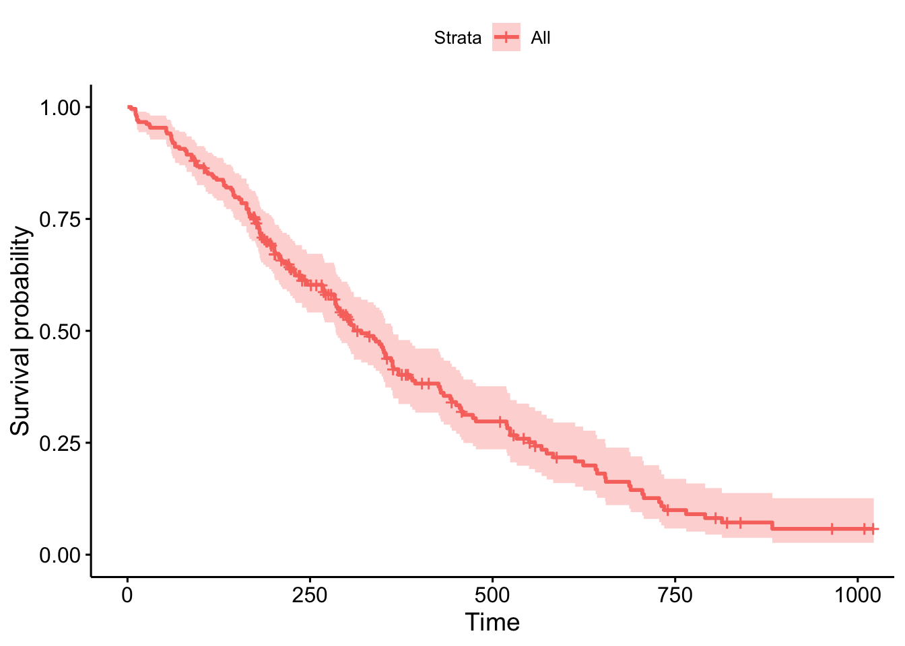
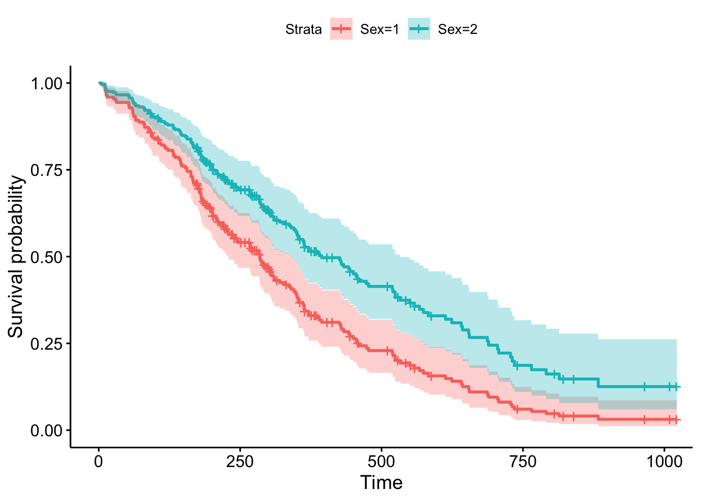

## Example of S(y) according to the Weibull distribution
## Note: It is 1-pweibull()
y <- seq(0, 100, 1)
Fy <- pweibull(y, shape=2, scale=50)
plot(x=y, y=(1-Fy), type="l")
This section will provide a brief introduction to survival data analysis, or similarly, “event history” or “duration” analysis.
Here are some supplemental resources:
Survival data is also known as event history or duration data analysis. When we have this type of data, we are generally interested in these types of questions:
There are two key components to survival data: time (e.g., days, months, years. etc) and the event of interest or “status” (i.e., whether an event has occurred). Canonically this could be an event such as death, but in political science this might be an event like the experience of a conflict, end of conflict, end of regime, etc.)
For example, we might call something “survival” analysis in a context where we were interested in the time to death of someone who has just had a particular medical diagnosis.
We will have two primary components: the survival function \(S(Y)\):
Time to failure \(Y_i\) as outcome: \(Y_i \geq 0\)
## Example of S(y) according to the Weibull distribution
## Note: It is 1-pweibull()
y <- seq(0, 100, 1)
Fy <- pweibull(y, shape=2, scale=50)
plot(x=y, y=(1-Fy), type="l")
More on the Weibull distribution here.
And the hazard function \(h(y)\): Given survival up until \(y\), the instantaneous rate at which something fails (that the event occurs).
Note: hazard rate is not exactly a probability and is difficult to interpret, but higher hazard rates reflect greater likelihood of failure.
In survival data, right-censoring of the data is common
A common way to summarize survival curves for actual data is through Kaplan-Meier curves.
This is a non-parametric analysis: Where \(n_j\) is the number of units at “risk” and \(d_j\) are the number of units failed at \(t_j\)
Example from Simmons (2000), “International law and state behavior: Commitment and compliance in international monetary affairs” published in the American Political Science Review.

We will use the lung data from the survival package. For plotting, we will use the package survminer.
## install.packages("survival")
library(survival)
data("lung")
head(lung) inst time status age sex ph.ecog ph.karno pat.karno meal.cal wt.loss
1 3 306 2 74 1 1 90 100 1175 NA
2 3 455 2 68 1 0 90 90 1225 15
3 3 1010 1 56 1 0 90 90 NA 15
4 5 210 2 57 1 1 90 60 1150 11
5 1 883 2 60 1 0 100 90 NA 0
6 12 1022 1 74 1 1 50 80 513 0time: days of survival.status: whether observation has failed or is right-censored. 1=censored, 2=dead.sex: Male=1; Female =2Note: the place where we would normally put our outcome variable in a regression formula now takes Surv(time, event)
## Kaplan-Meier
sfit <- survfit(Surv(time=time, event=status)~sex, data=lung)
## install.packages("survminer")
library(survminer)
ggsurvplot(sfit,
conf.int=TRUE,
risk.table=TRUE,
pval = TRUE,
legend.labs=c("Male", "Female"),
legend.title="Sex",
title="Kaplan-Meier: for Lung Cancer Survival")
By using parametric approaches (using an underlying probability distribution), we can build on Kaplan-Meier to accept a broader range of covariates in the independent variables. There are three common distributions used:
Other variations also exist (e.g., recurrent events, multi-state models).
Example of Cox Proportional Hazards table from Simmons (2000)

We will do an example of these modeling approaches using the same package in R and dataset.
The workhorse of survival modeling is the Surv() function, which tells R the nature of your survival data, such as the duration variable and if the origin should be assumed to be 0 or if, instead, it is located under a different variable. The examples we use are very basic. If you are using this for your own research, I recommend investigating the options available in this function. The documentation is here.
Note: survreg() fits what are called accelerated failure models, not proportional hazards models. The coefficients are logarithms of ratios of survival times, so a positive coefficient means longer survival. This is a different type of modeling specification than what other softwares, such as Stata, will default to when fitting the Weibull model. Both can be valid, but it matters for interpretation (what a positive vs. negative sign means in the model). Sarah Haile describes alternative ways to present these models using supplemental functions here.
wfit <- survreg(Surv(time=time, event=status)~ age + sex,
data=lung,
dist = "weibull")
summary(wfit)
Call:
survreg(formula = Surv(time = time, event = status) ~ age + sex,
data = lung, dist = "weibull")
Value Std. Error z p
(Intercept) 6.27485 0.48137 13.04 < 2e-16
age -0.01226 0.00696 -1.76 0.0781
sex 0.38209 0.12748 3.00 0.0027
Log(scale) -0.28230 0.06188 -4.56 5.1e-06
Scale= 0.754
Weibull distribution
Loglik(model)= -1147.1 Loglik(intercept only)= -1153.9
Chisq= 13.59 on 2 degrees of freedom, p= 0.0011
Number of Newton-Raphson Iterations: 5
n= 228 We can interpret this as women having a higher survival duration than men. Positive coefficients for this model are associated with longer duration times. The hazard decreases and average survival time increases as the \(x\) covariate increases.
We can get different quantities of interest, such as a point at which 90% of patients survive.
# 90% of patients of these types survive past time point above
predict(wfit, type = "quantile", p =1-0.9,newdata =
data.frame(age=65, sex=c(1,2))) 1 2
64.28587 94.20046 A survival curve can then be visualized as follows:
pct <- seq(.99, .01, by = -.01)
wb <- predict(wfit, type = "quantile", p =1-pct,newdata =
data.frame(age=65, sex=1))
survwb <- data.frame(time = wb, surv = pct,
upper = NA, lower = NA, std.err = NA)
ggsurvplot(fit = survwb, surv.geom = geom_line,
legend.labs="Male, 65")
This model will rely on a different R function coxph(). Note the difference in interpretation.
fit <- coxph(Surv(time, status) ~ age + sex,
data = lung)
summary(fit)Call:
coxph(formula = Surv(time, status) ~ age + sex, data = lung)
n= 228, number of events= 165
coef exp(coef) se(coef) z Pr(>|z|)
age 0.017045 1.017191 0.009223 1.848 0.06459 .
sex -0.513219 0.598566 0.167458 -3.065 0.00218 **
---
Signif. codes: 0 '***' 0.001 '**' 0.01 '*' 0.05 '.' 0.1 ' ' 1
exp(coef) exp(-coef) lower .95 upper .95
age 1.0172 0.9831 0.9990 1.0357
sex 0.5986 1.6707 0.4311 0.8311
Concordance= 0.603 (se = 0.025 )
Likelihood ratio test= 14.12 on 2 df, p=9e-04
Wald test = 13.47 on 2 df, p=0.001
Score (logrank) test = 13.72 on 2 df, p=0.001Here, positive coefficients mean that the hazard (risk of death) is higher.
Visualizing Results
survminer package has some shortcuts for this type of model.library(ggplot2)
library(survminer)
cox1 <- survfit(fit)
ggsurvplot(cox1, data = lung)
We can also visualize the results by using the same types of approaches we do when we use the predict() function and specify new \(X\) data in other types of regression. Here, we will use the command survfit.
sex_df <- data.frame(sex = c(1,2), age = c(62, 62) )
cox1 <- survfit(fit, data = lung, newdata = sex_df)
ggsurvplot(cox1, data = lung, legend.labs=c("Sex=1", "Sex=2"))Warning: `gather_()` was deprecated in tidyr 1.2.0.
ℹ Please use `gather()` instead.
ℹ The deprecated feature was likely used in the survminer package.
Please report the issue at <https://github.com/kassambara/survminer/issues>.
You may wish to test the proportional hazards assumption. Here are two resources for this here and here.